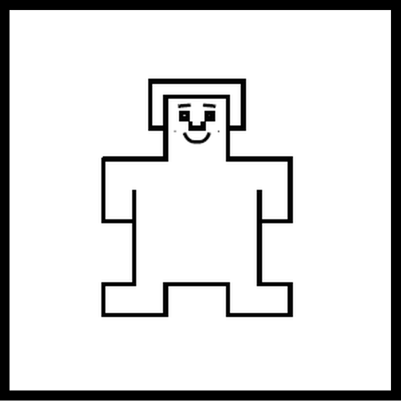
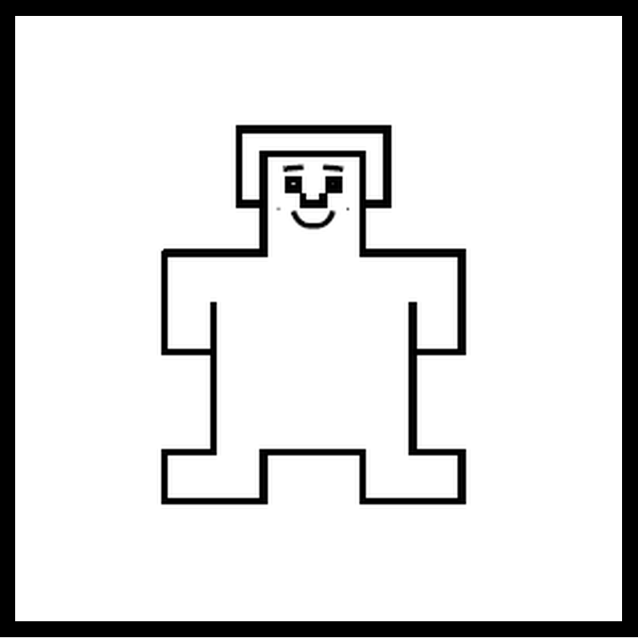
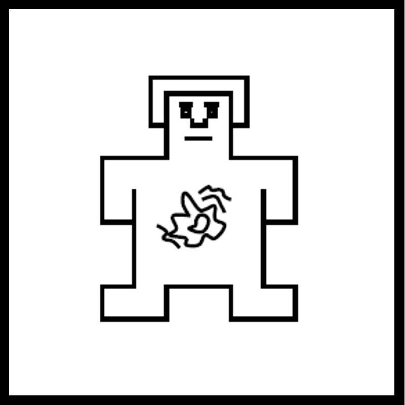
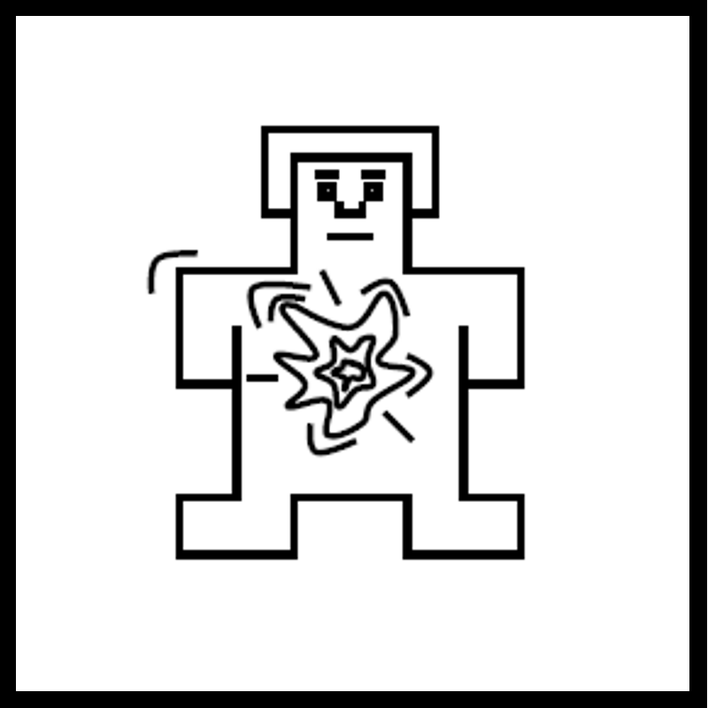
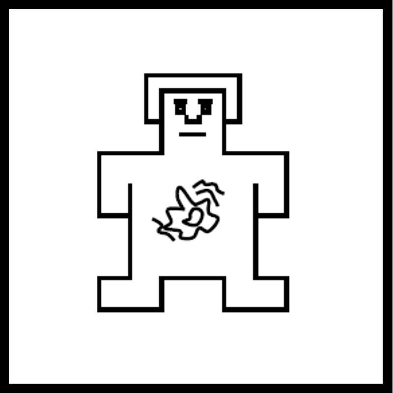
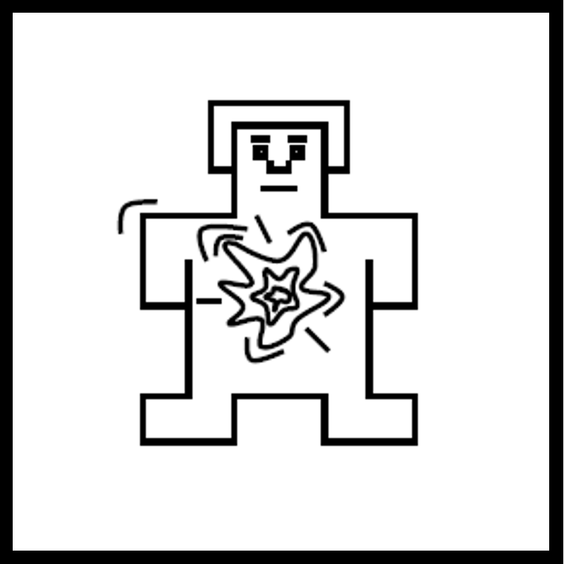

Block 3 of 3
This is the third block of the music emotion experiment
Music Emotion Experiment
We would like you to listen to a series of music clips or rhythms. Each clip lasts 30 seconds. After each clip, you will be asked to rate the following:
1. How positive/negative the music makes you feel
2. The intensity of how you feel
3. Your familiarity with the music
4. How much the music makes you want to move
5. How much you like the music
Instructions:
Turn up your volume to at least 75% of max volume.
While listening to the music, please sit still and relaxed. Do not move or dance.
Keep your eyes focused on the white cross while listening.
First, we will practice rating some music to familiarize you with the surveys.
To begin, hit the continue button below.
Practice Session
Let's start with a brief practice using practice music clips
You will:
- Listen to practice music clips (10 seconds each)
- Rate your emotional responses after each clip
- Get familiar with the rating scales
Click Continue when you're ready to begin the practice, or Skip if you've done this before.
Rate Your Response


 


 




Rate Your Response
Practice Complete!
You've completed the practice session.
Now you'll begin Block 3 of the main experiment with the same type of ratings.
Block 3 contains 16 music clips.
Optional Final Trial
Optional but recommended: Play your one of your favorite songs from your phone for 30 seconds while you look at the fixation cross on the next screen.
Hit the "Start" button on the next screen when you begin playing your song. After listening, complete the brief survey.
Stop the music
Rate Your Favorite Song
Rate Your Favorite Song
Congratulations! You have completed Block 3.
Close this tab and continue to the next block when you are ready by clicking on the next block on the home screen.